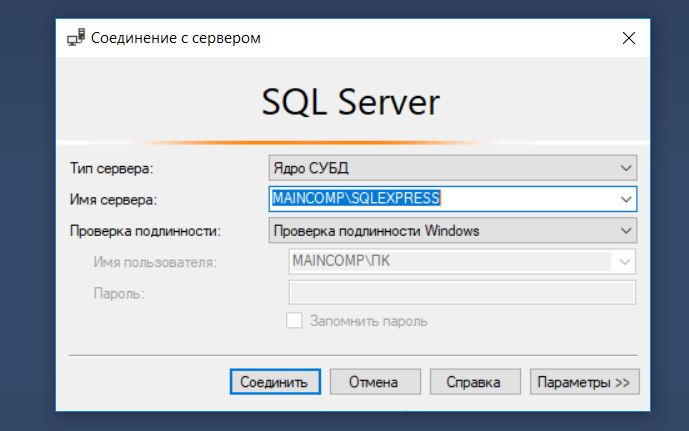
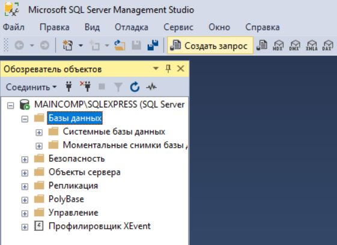
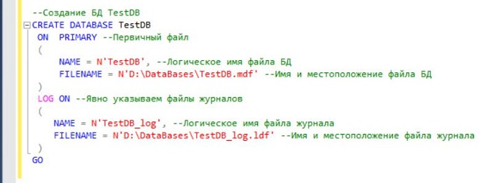
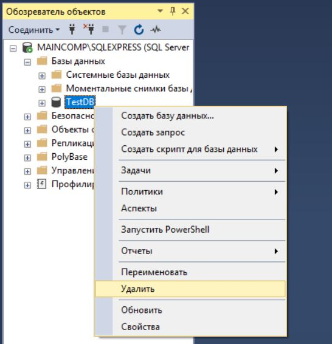
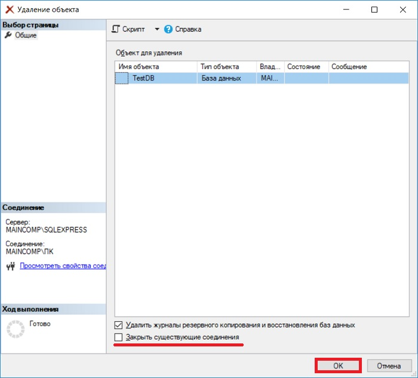

5.Технологии создания базы данных с применением языка SQL.Добавление, удаление данных и таблиц
Создание базы данных в SQL Server Management Studio
Первое, что Вам нужно сделать, это запустить среду SQL Server Management Studio и подключиться к SQL серверу.

Создание базы данных на T-SQL (CREATE DATABASE)
Процесс создания базы данных на языке T-SQL, наверное, еще проще, так как для того чтобы создать БД с настройками по умолчанию (как мы это сделали чуть выше), необходимо написать всего три слова в редакторе SQL запросов – инструкцию CREATE DATABASE и название БД.
Сначала открываем редактор SQL запросов, для этого щелкаем на кнопку «Создать запрос» на панели инструментов.

Затем вводим следующую инструкцию, и запускаем ее на выполнение, кнопка «Выполнить».

Где CREATE – это команда языка T-SQL для создания объектов на SQL сервере, командой DATABASE мы указываем, что хотим создать базу данных, а TestDB — это имя новой базы данных.
Конечно же, на данном этапе многие не знают ни Microsoft SQL Server, ни языка T-SQL, многие, наверное, как раз и создают базу данных для того, чтобы начать знакомиться с этой СУБД и начать изучать язык SQL. Поэтому чтобы Вам легче было это делать, советую почитать книгуa «SQL код» – это самоучитель по языку SQL для начинающих программистов, которую написал я, и в которой я подробно, и в то же время простым языком, рассказываю о языке SQL.
С помощью инструкции CREATE DATABASE можно задать абсолютно все параметры, которые отображались у нас в графическом интерфейсе SSMS. Например, если бы мы заменили вышеуказанную инструкцию следующей, то у нас база данных создалась бы в каталоге DataBases на диске D.

Удаление базы данных в Microsoft SQL Server
В случае необходимости можно удалить базу данных. В реальности, конечно же, такое редко будет требоваться, но в процессе обучения, может быть, и часто. Это можно сделать также, как с помощью графического интерфейса, так и с помощью языка T-SQL.
В случае с графическим интерфейсом необходимо в обозревателе объектов щелкнуть правой кнопкой мыши по нужной базе данных и выбрать пункт «Удалить».
Примечание! Удалить базу данных возможно, только если к ней нет никаких подключений, т.е. в ней никто не работает, даже Ваш собственный контекст подключения в SSMS должен быть настроен на другую БД (например, с помощью команды USE). Поэтому предварительно перед удалением необходимо попросить всех завершить сеансы работы с БД, или в случае с тестовыми базами данных принудительно закрыть все соединения.

В окне «Удаление объекта» нажимаем «ОК». Для принудительного закрытия существующих подключений к БД можете поставить галочку «Закрыть существующие соединения».

В случае с T-SQL, для удаления базы данных достаточно написать следующую инструкцию (в БД также никто не должен работать).

Где DROP DATABASE — это инструкция для удаления базы данных, TestDB – имя базы данных. Иными словами, командой DROP объекты на SQL сервере удаляются.